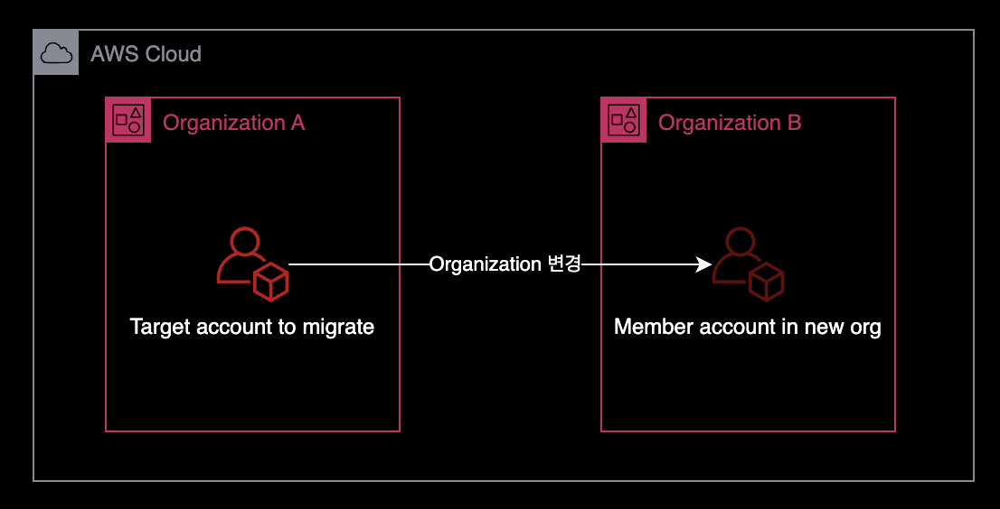
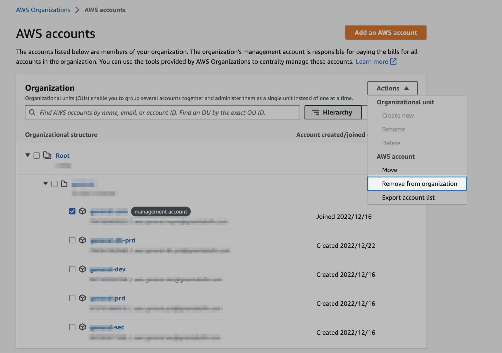
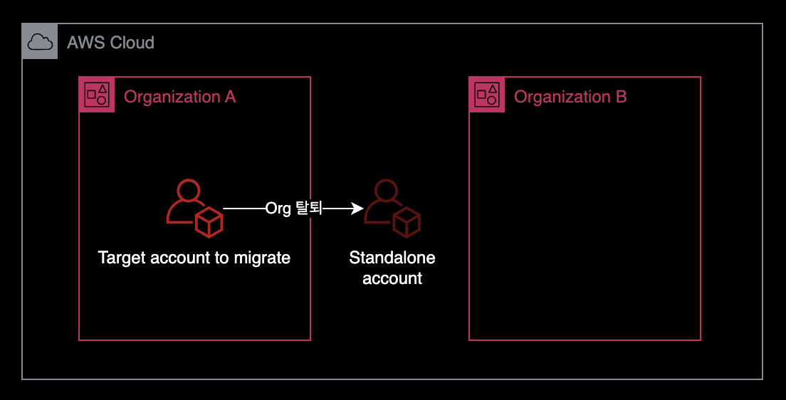
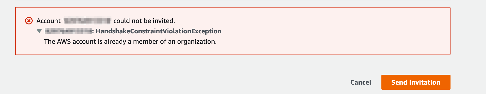
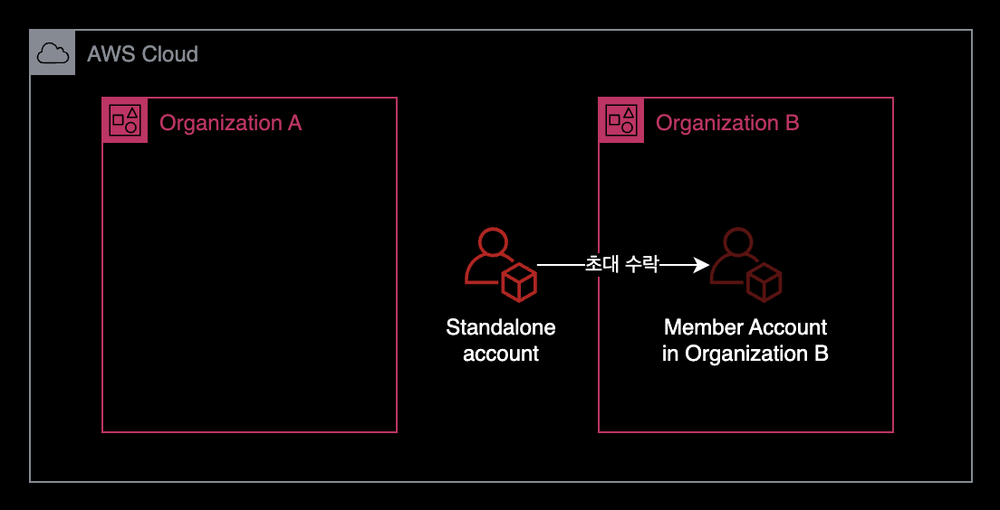
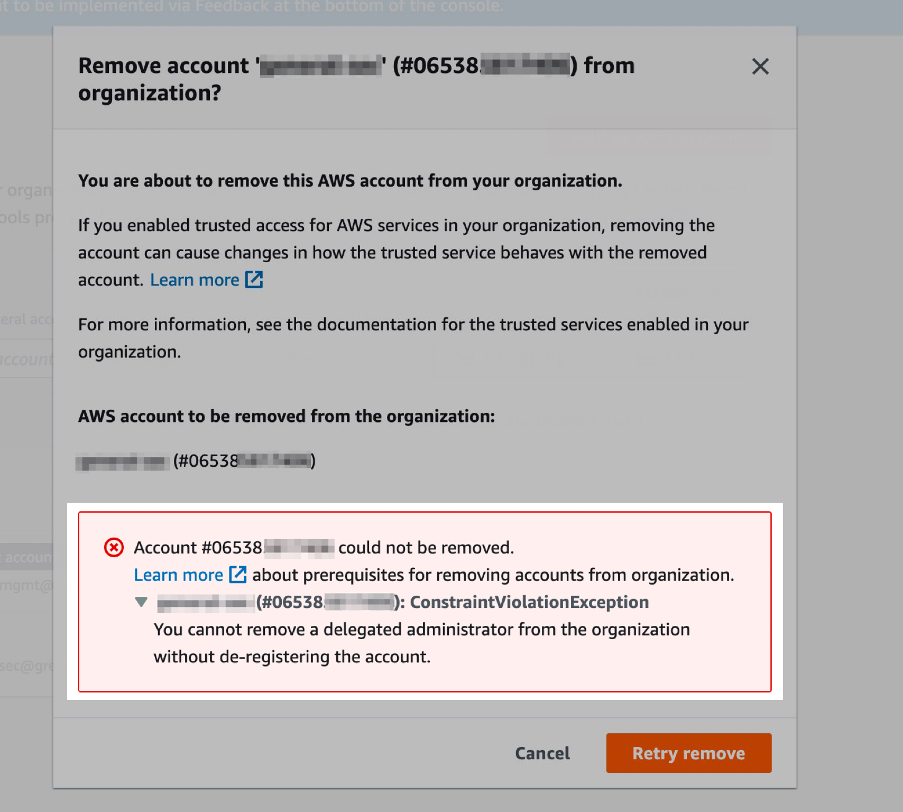

AWS 계정 Organization 옮기기
개요
A Organization에 속한 AWS 계정을 B Organization으로 옮기는 방법을 소개합니다.
다른 회사에서 관리해온 AWS 계정을 이어 받아서 관리하는 상황이 필요하는 경우에 이러한 특정 AWS 계정의 Organization 소속 변경이 필요할 수 있습니다.
환경

AWS 계정 하나를 A Organization에서 B Organization으로 옮기는 상황입니다.
설정 방법
기존 Org 탈퇴
기존 A Organization의 Management Account로 로그인합니다.
이후 AWS 콘솔 → AWS Organizations → Actions → 해당 AWS 계정(Member Account)을 Remove from organization 합니다.

해당 계정은 이제 Organization에 속하지 않은 독립적인 AWS 계정이 됩니다.

계정 직접 로그인
root 로그인 (해당 계정의 root user)
계정 정보 변경
이메일 주소 및 Account Alias 변경 (해당 계정의 root user)
새 Org 초대
B Organization에서 계정 초대 (B Org의 Management Account)
만약 해당 AWS 계정이 아직 AWS Organization에 속해 있는 경우 AWS 콘솔에서 다음과 같은 에러를 반환합니다.

Org 초대 수락
해당 AWS 계정의 root user로 로그인합니다.
AWS 콘솔 → AWS Organizations → 좌측의 Invitiations → 초대 수락 버튼을 클릭합니다.

참고자료
AWS Organizations의 조직 간에 계정을 이동하려면 어떻게 해야 하나요?
트러블슈팅 가이드
탈퇴 불가 ConstraintViolationException
증상
AWS Organizations에서 특정 AWS 계정을 탈퇴 실행시 ConstraintViolationException 에러가 발생하며 실패합니다.

You cannot remove a delegated administrator from the organization without de-registering the account.
위임된 관리자는 등록 해제 없이 Organization에서 탈퇴할 수 없다는 에러 메세지입니다.
원인
AWS Organization에는 서비스마다 관리자 권한 위임Delegation을 할 수 있는 기능이 있습니다.
해당 AWS 계정에 서비스 권한 위임이 되어 있는 상태라 Organization에서 삭제할 수 없습니다.
AWS Organization에서 서비스 관리자 권한 위임할 수 있는 AWS 서비스 목록을 확인하고 싶으시면 아래 문서를 확인하세요.
AWS Organizations와 함께 사용할 수 있는 AWS 서비스
해결방안
해당 AWS 계정에 위임했던 서비스 권한을 해제합니다.
상세 조치방법
서비스 권한 위임 확인
Management Account에서 아래 명령어를 실행합니다.
특정 계정에 위임한 서비스 정보를 확인하는 명령어입니다.
$ aws organizations list-delegated-services-for-account \
--account-id <탈퇴가_안되는_ACCOUNT_ID>
명령어 결과를 확인해보니 Firewall Manager fms.amazonaws.com 서비스를 햬당 계정에 권한 위임한 상태입니다.
{
"DelegatedServices": [
{
"ServicePrincipal": "fms.amazonaws.com",
"DelegationEnabledDate": "2023-01-18T16:28:51.155000+09:00"
}
]
}
Firewall Manager 위임을 해제하기 전까지는 해당 AWS 계정을 Organization에서 탈퇴시킬 수 없습니다.
서비스 권한 위임 해제
# 명령어 형식
$ aws organizations deregister-delegated-administrator \
--account-id <탈퇴가_안되는_ACCOUNT_ID> \
--service-principal <서비스_이름>
# 명령어 예시
$ aws organizations deregister-delegated-administrator \
--account-id 111122223333 \
--service-principal fms.amazonaws.com
참고
deregister-delegated-administrator 명령어 공식 문서
결과 재확인
$ aws organizations list-delegated-services-for-account \
--account-id <탈퇴가_안되는_ACCOUNT_ID>
이제 해당 계정에서 권한을 위임한 AWS 서비스 목록이 조회되지 않습니다.
An error occurred (AccountNotRegisteredException) when calling the ListDelegatedServicesForAccount operation: The provided account is not a registered delegated administrator for your organization.
이제 Management Account에서 다시 탈퇴를 진행하면 문제없이 완료됩니다.